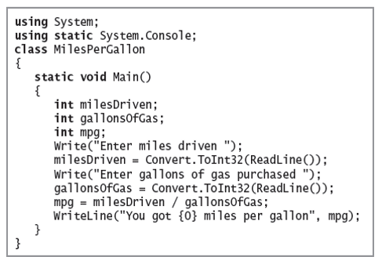
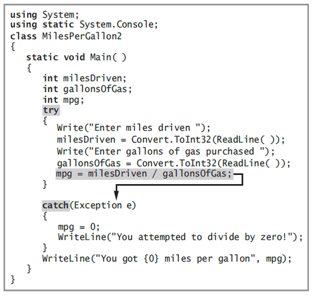
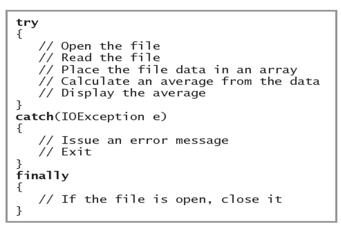

C# - Working with Data and Data Querying/Manipulation

Instructor: Chris Fulton
Learning Agenda
- Exception Handling
- What is Exception Handling?
- Understanding the difference between bugs, user errors and exceptions
- Learn about exceptions, the Exception class, and generating SystemExceptions
- Learn about traditional and object-oriented error-handling methods
- I/O, Directory and Streams
- Serialization/Deserialization
- Overview of System.IO Namespace
- Files and Steams | Reading and Writing to Files
- Working with JSON Data using JSON.NET
- Working with LINQ and Lambda Function
- What is Linq
- What can you query with Linq
- What is needed for Linq
What is Exception handling?
Exception handling is the process of responding to exceptions when a computer program runs. An exception occurs when an unexpected event happens that requires special processing. Examples include a user providing abnormal input, a file system error being encountered when trying to read or write a file, or a program attempting to divide by zero.
The main purpose is to prevent abnormal termination of the program and to customise the exception message.
Bugs, User Errors and Exceptions
- Bugs - errors the programmer caused
- Ex. Wrong calculation, not properly handling memory alocation, variable access permission, etc..
- User Errors - errors the user caused
- Ex. Improperly formatted string text
- Exceptions - unexpected errors that are caused during runtime, Terminates the program unless exceptions are handled
- Cannot connect to a database, not able to open or read a file, etc..
- Ex. of Error vs. Exception
Understanding Structured Exception Handling
- Exception Handling
- - Object-oriented techniques used to manage such errors
- Exceptions are objects of the Exception class or one of its derived classes
- Exception Class
Exception Subclasses
Exception Derived clsses:
- Most exceptions derive from three classes
- - Predefined Common Language Runtime exception classes derived from
SystemException - User-defined application exception classes you derive from
ApplicationException - The
Exceptionclass which is the parent ofSystemExceptionandApplicationException
Purposely Generating a SystemException
- You can deliberately generate a SystemException by forcing a program to contain an error
- - Example: Dividing an integer by zero
- Termination of the program is abrupt and unforgiving
- Object-oriented error handling techniques provide more elegant solutions
- With exception handling,a program can continue after dealing with a problem
- - Especially important in mission-critical applications - any process that is crucial to an organization
Purposely Generating a SystemException
- Programs that can handle exceptions appropriately are said to be more fault tolerant and robust than those that do not
- - Fault-tolerant applications are designed so that they continue to operate, possibly at a reduced level, when some part of the system fails
- - Robustness represents the degree to which a system is resilient to stress, maintaining correct functioning
Exception Subclasses

Traditional and Object-Oriened Error-Handling Methods
- Check a variable’s value with an if statement before attempting to divide it into another number
- - Prevents division by zero
- However, it does not really "handle an exception"
- - Is efficient if you think it will be a frequent problem
- Has little "overhead"
- Otherwise, create an
Exceptionobject
Exception handling uses three terms: try, catch, throw, finally
try block
Contains statements that can produce an error
Code at least one catch block or finally block immediately following a try block
catch block
Can "catch" one type of Exception
You must code at least one catch block or finally block immediately following a try block
finally block
Contains actions to perform at the end of a try…catch sequence
Executes whether the try block identifies any Exceptions or not
Used to perform clean-up tasks
A finally block executes after 1) the try ends normally. 2) the catch executes and 3) the try ends abnormally and the catch does not execute
Try/Catch block
Try/Catch block example
Try/Catch/Finally block example
Catching Multiple Exceptions
- You can place as many statements as you need within a try block
- - Only the first error-generating statement throws an Exception
- Multiple catch blocks are examined in sequence until a match is found for the Exception that occurred
- Various
Exceptionscan be handled by the samecatchblock
Catching Multiple Exceptions


Handling Exceptions Thrown from Outside Methods
- An advantage of using object-oriented exception-handling techniques:
- - The ability to deal with Exceptions appropriately as you decide how to handle them
- When methods from other classes throw Exceptions, methods do not have to catch them
- - Your calling program can catch them, and you can decide what to do
Handling Exceptions Thrown from outside methods


Using the Exception Class's ToString() Method and Message property
- The
Exceptionclass overridesToString() - - Provides a descriptive error message
- - The user can receive percise information about the nature of any Exception that is thrown
Using the ExceptionClass's ToString() Method and Message property
ExceptionclassMessageproperty- - Contains useful information about an
Exception getType()method- - Indicates the name of the class
Tracing Exception Objects Through the Call Stack
- Call Stack
- -The memory location where the computer stores the list of locations to which the system must return
- If a method throws an Exception and does not catch it, the Exception is thrown to the next method “up” the call stack
StackTraceproperty- - Contains a list of methods in the call stack so you can determine the location of the Exception